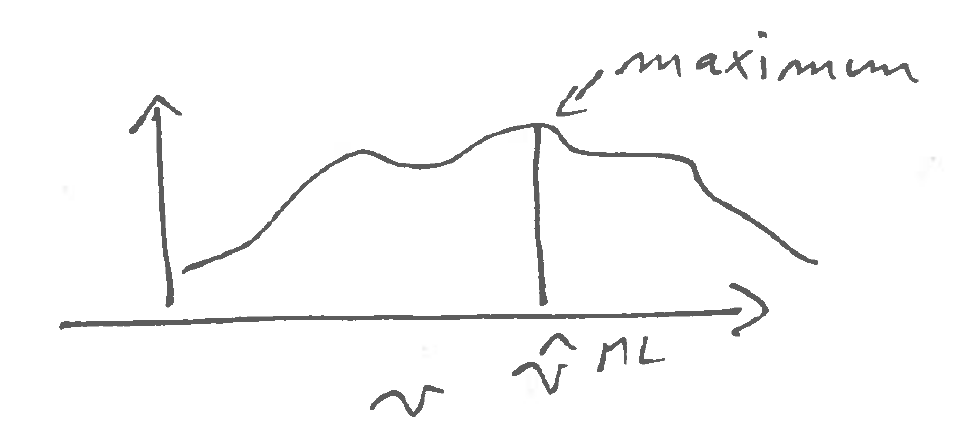
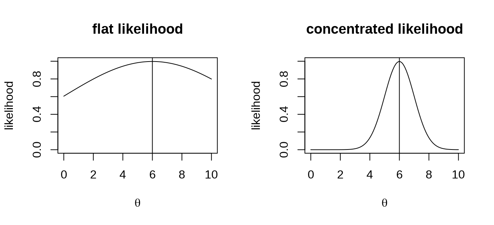

3 Maximum likelihood estimation
3.1 Principle of maximum likelihood estimation
3.1.1 Outline
The starting points in an ML analysis are
- the observed \(n\) data samples \(x_1,\ldots,x_n\), iid (=independent and identically distributed), with the ordering irrelevant, and a
- model \(F_{\boldsymbol \theta}\) with corresponding probability density or probability mass function \(f(x|\boldsymbol \theta)\) with parameters \(\boldsymbol \theta\)
From this we construct the likelihood function:
- \(L_n(\boldsymbol \theta|x_1,\dots,x_n)=\prod_{i=1}^{n} f(x_i|\boldsymbol \theta)\)
Historically, the likelihood is also often interpreted as the probability of the data given the model. However, this is not strictly correct. First this interpretation only applies to discrete random variables. Second, since the samples are iid even in this case one would still need to add a factor accounting for the multiplicity of possible orderings of the samples to obtain the correct probability of the data. Third, the interpretation of likelihood as probability of the data completely breaks down for continuous random variables because then \(f(x)\) is a density, not a probability.
As we have seen in the previous chapter the origin of the likelihood function lies in its connection to relative entropy. Specifically, the log-likelihood function
- \(l_n(\boldsymbol \theta|x_1,\dots,x_n)=\sum_{i=1}^n \log f(x_i|\boldsymbol \theta)\)
divided by sample size \(n\) is a large sample approximation of the cross-entropy between the unknown true data generating model and the approximating model \(F_{\boldsymbol \theta}\). Note that log-likelihood is additive over the samples \(x_i\).
The maximum likelihood point estimate \(\hat{\boldsymbol \theta}^{ML}\) is then given by maximising the (log)-likelihood
\[\hat{\boldsymbol \theta}^{ML} = \text{arg max} l_n(\boldsymbol \theta|x_1,\dots,x_n)\]

3.1.2 Obtaining MLEs for a regular model
In regular situations, i.e. when
- the log-likelihood function is smooth and twice differentiable,
- the second derivative is negative and not zero, and for more than one parameter the Hessian matrix is negative definite and not singular,
- the parameters of the model are all identifiable (in particular the model is not overparameterised), and
- the true parameter values lie inside the support and not on the border,
then in order to maximise \(l_n\) one may use the score function \(\boldsymbol S(\boldsymbol \theta)\) which is the first order derivative of the log-likelihood function:
\[\begin{align*} \begin{array}{cc} S_n(\theta) = \frac{d l_n(\theta|x_1,\dots,x_n)}{d \theta}\\ \\ \\ \boldsymbol S_n(\boldsymbol \theta)=\nabla l_n(\boldsymbol \theta|x_1,\dots,x_n)\\ \\ \end{array} \begin{array}{ll} \text{scalar parameter: first derivative}\\ \text{of log-likelihood function}\\ \\ \text{gradient if } \boldsymbol \theta\text{ is a vector}\\ \text{(i.e. if there's more than one parameter)}\\ \end{array} \end{align*}\]
A necessary (but not sufficient) condition for the MLE is that \[ \boldsymbol S_n(\hat{\boldsymbol \theta}_{ML}) = 0 \]
To demonstrate that the log-likelihood function actually achieves a maximum at \(\hat{\boldsymbol \theta}_{ML}\) the curvature at the MLE must negative, i.e. that the log-likelihood must be locally concave at the MLE.
In the case of a single parameter (scalar \(\theta\)) this requires to check that the second derivative of the log-likelihood function is negative: \[ \frac{d^2 l_n(\hat{\theta}_{ML})}{d \theta^2} <0 \] In the case of a parameter vector (multivariate \(\boldsymbol \theta\)) you need to compute the Hessian matrix (matrix of second order derivatives) at the MLE: \[ \nabla^T\nabla l_n(\hat{\boldsymbol \theta}_{ML}) \] and then verify that this matrix is negative definite (i.e. all its eigenvalues must be negative).
As we will see later the second order derivatives of the log-likelihood function also play an important role for assessing the uncertainty of the MLE.
3.1.3 Invariance property of the maximum likelihood
Maximisation is a procedure that is invariant against coordinate transformations of the argument. Suppose \(x_{\max} = \text{arg max } h(x)\) and \(y = g(x)\) where \(g\) is an invertible function. Then \(y_{\max} = \text{arg max } h( g^{-1}(y) ) = g(x_{\max})\). The achieved maximum itself remains invariant: \(h( x_{\max} ) = h(g^{-1}(y_{\max} ) )\).
With regard to maximum likelihood estimation this implies the following invariance property of the maximum likelihood:
- Suppose that \(\hat{\theta}_{ML}\) is the MLE of \(\theta\).
- We transform the parameter to \(\theta^{\star} = g(\theta)\) where \(g\) is an invertible function.
- Then \(g(\hat{\theta}_{ML})=\hat{\theta}^{\star}\) is the MLE of \(\theta^{\star}\).
- The value of the achieved maximum likelihood is the same in both cases, i.e. it is invariant against transformation of the parameters.
The invariance property can be very useful in practise because it may be easier to perform the maximisation required for finding the MLE in a particular coordinate system.
See Worksheet 2 for an example application of the invariance principle.
3.1.4 Consistency of maximum likelihood estimates
One important property of maximum likelihood is that it produces consistent estimates.
Specifically, if the true underlying model \(F_{\text{true}}\) with parameter \(\boldsymbol \theta_{\text{true}}\) is contained in the set of specified candidates models \(F_{\boldsymbol \theta}\) \[\underbrace{F_{\text{true}}}_{\text{true model}} \subset \underbrace{F_{\boldsymbol \theta}}_{\text{specified models}}\] then \[\hat{\boldsymbol \theta}_{ML} \overset{\text{large }n}{\longrightarrow} \boldsymbol \theta_{\text{true}}\]
This is a consequence of \(D_{\text{KL}}(F_{\text{true}},F_{\boldsymbol \theta})\rightarrow 0\) for \(F_{\boldsymbol \theta} \rightarrow F_{\text{true}}\), and that maximisation of the likelihood function is for large \(n\) equivalent to minimising the relative entropy.
Thus given sufficient data the MLE will converge to the true value. As a consequence, MLEs are asympotically unbiased. As we will see in the examples they can still be biased in finite samples.
Note that even if the candidate model \(F_{\boldsymbol \theta}\) is misspecified (i.e. it does not contain the actual true model) the MLE is still optimal in the sense in that it will find the closest possible model.
It is possible to find inconsistent MLEs, but this occurs only in situations where the dimension of the model / number of parameters increases with sample size, or when the MLE is at a boundary or when there are singularities in the likelihood function.
3.2 Maximum likelihood estimation in practise
3.2.1 Worked examples
In this section we now provide a number of worked example how ML estimation works in practise.
Example 3.1 Estimation of a proportion:
We aim to estimate the true proportion \(p\) in a Bernoulli experiment with binary outcomes, say the proportion of “successes” vs. “failures” or of “heads” vs. “tails” in a coin tossing experiment.
- Bernoulli model \(Ber(p)\): \(\text{Pr}(\text{"success"}) = p\) and \(\text{Pr}(\text{"failure"}) = 1-p\).
- The “success” is indicated by outcome \(x=1\) and the “failure” by \(x=0\).
- We conduct \(n\) trials and record \(n_1\) successes and \(n-n_1\) failures.
- Parameter: \(p\): probability of “success”.
What is the MLE of \(p\)?
the data \(x_1, \ldots, x_n\) take on values 0 or 1.
the average of the data points is \(\bar{x} = \frac{1}{n} \sum_{i=1}^n x_i = \frac{n_1}{n}\).
the probability mass function (PMF) of the Bernoulli distribution \(Ber(p)\) is: \[ f(x) = p^x (1-p)^{1-x} = \begin{cases} p & \text{if $x=1$ }\\ 1-p & \text{if $x=0$} \\ \end{cases} \]
log-PMF: \[ \log f(x) = x \log(p) + (1-x) \log(1 - p) \]
log-likelihood function: \[ \begin{split} l_n(p) & = \sum_{i=1}^n \log f(x_i) \\ & = n_1 \log p + (n-n_1) \log(1-p) \\ & = n \left( \bar{x} \log p + (1-\bar{x}) \log(1-p) \right) \\ \end{split} \] Note how the log-likelihood depends on the data only through \(\bar{x}\)! This is an example of a sufficient statistic for the parameter \(p\) (in fact it is also a minimally sufficient statistic). This will be discussed in more detail later.
Score function: \[ S_n(p)= \frac{dl_n(p)}{dp}= n \left( \frac{\bar{x}}{p}-\frac{1-\bar{x}}{1-p} \right) \]
Maximum likelihood estimate: Setting \(S_n(\hat{p}_{ML})=0\) yields as solution \[ \hat{p}_{ML} = \bar{x} = \frac{n_1}{n} \]
With \(\frac{dS_n(p)}{dp} = -n \left( \frac{\bar{x}}{p^2} + \frac{1-\bar{x}}{(1-p)^2} \right) <0\) the optimum corresponds indeed to the maximum of the (log-)likelihood function as this is negative for \(\hat{p}_{ML}\) (and indeed for any \(p\)).
The maximum likelihood estimator of \(p\) is therefore identical to the frequency of the successes among all observations.
Note that to analyse the coin tossing experiment and to estimate \(p\) we may equally well use the Binomial distribution \(\sim Binomial(n, p)\) as model for the number of successes. In this case we then have only a single observation, namely the observed \(k\) . This results in the same MLE for \(p\) but the likelihood function based on the Binomial PMF includes the Binomial cofficient \(\binom{n}{k}\) . However, as this factor does not depend on \(p\) it disappears in the score function and has no influence in the derivation of the MLE.
Example 3.2 Normal distribution with unknown mean and known variance:
- \(x \sim N(\mu,\sigma^2)\) with \(\text{E}(x)=\mu\) and \(\text{Var}(x) = \sigma^2\)
- the parameter to be estimated is \(\mu\) whereas \(\sigma^2\) is known.
What’s the MLE of parameter \(\mu\)?
- the data \(x_1, \ldots, x_n \in [-\infty, \infty]\) are real values.
- the average \(\bar{x} = \frac{1}{n} \sum_{i=1}^n x_i\) is real as well.
- Density: \[ f(x)= \frac{1}{\sqrt{2\pi\sigma^2}} \exp\left(-\frac{(x-\mu)^2}{2\sigma^2}\right)\]
- Log-Density: \[\log f(x) =-\frac{1}{2} \log(2\pi\sigma^2) - \frac{(x-\mu)^2}{2\sigma^2}\]
Log-likelihood function: \[ \begin{split} l_n(\mu) &= \sum_{i=1}^n \log f(x_i)\\ &=-\frac{1}{2\sigma^2}\sum_{i=1}^n(x_i-\mu)^2 \underbrace{-\frac{n}{2}\log(2 \pi \sigma^2) }_{\text{constant term, does not depend on } \mu \text{, can be removed}}\\ &=-\frac{1}{2\sigma^2}\sum_{i=1}^n(x_i^2 - 2 x_i \mu+\mu^2) + C\\ &=\frac{n}{\sigma^2} ( \bar{x} \mu - \frac{1}{2}\mu^2) \underbrace{ - \frac{1}{2\sigma^2}\sum_{i=1}^n x_i^2 }_{\text{another constant term}} + C\\ \end{split} \] Note how the non-constant terms of the log-likelihood depend on the data only through \(\bar{x}\)!
- Score function: \[ S_n(\mu) = \frac{n}{\sigma^2} ( \bar{x}- \mu) \]
- Maximum likelihood estimate: \[S_n(\hat{\mu}_{ML})=0 \Rightarrow \hat{\mu}_{ML} = \bar{x}\]
With \(\frac{dS_n(\mu)}{d\mu} = -\frac{n}{\sigma^2}<0\) the optimum is indeed the maximum
The constant term \(C\) in the log-likelihood function collects all terms that do not depend on the parameter. After taking the first derivative with regard to the parameter this term disappears thus \(C\) is not relevant for finding the MLE of the parameter. In the future we will often omit such constant terms from the log-likelihood function without further mention.
Example 3.3 Normal distribution with mean and variance both unknown:
- \(x \sim N(\mu,\sigma^2)\) with \(\text{E}(x)=\mu\) and \(\text{Var}(x) = \sigma^2\)
- both \(\mu\) and \(\sigma^2\) need to be estimated.
What’s the MLE of the parameter vector \(\boldsymbol \theta= (\mu,\sigma^2)^T\)?
- the data \(x_1, \ldots, x_n \in [-\infty, \infty]\) are real values.
- the average \(\bar{x} = \frac{1}{n} \sum_{i=1}^n x_i\) is real as well.
the average of the squared data \(\overline{x^2} = \frac{1}{n} \sum_{i=1}^n x_i^2 \geq 0\) is non-negative.
- Density: \[ f(x)=(2\pi\sigma^2)^{-\frac{1}{2}}\exp\left(-\frac{(x-\mu)^2}{2\sigma^2}\right)\]
- Log-Density: \[\log f(x) =-\frac{1}{2} \log(2\pi\sigma^2) - \frac{(x-\mu)^2}{2\sigma^2}\]
Log-likelihood function: \[ \begin{split} l_n(\boldsymbol \theta) & = \sum_{i=1}^n \log f(x_i)\\ &= -\frac{n}{2}\log(\sigma^2)-\frac{1}{2\sigma^2}\sum_{i=1}^n(x_i-\mu)^2 \underbrace{-\frac{n}{2} \log(2 \pi) }_{\text{constant not depending on }\mu \text{ or } \sigma^2}\\ &= -\frac{n}{2}\log(\sigma^2)-\frac{n}{2\sigma^2} ( \overline{x^2} -2 \bar{x} \mu + \mu^2) + C\\ \end{split} \] Note how the log-likelihood function depends on the data only through \(\bar{x}\) and \(\overline{x^2}\)!
Score function \(\boldsymbol S\) (row vector!), gradient of \(l_n(\boldsymbol \theta)\): \[ \begin{split} \boldsymbol S(\boldsymbol \theta) &= \nabla l_n(\boldsymbol \theta) \\ &= \begin{pmatrix} \frac{n}{\sigma^2} (\bar{x}-\mu) \\ -\frac{n}{2\sigma^2}+\frac{n}{2\sigma^4} \left( \overline{x^2} - 2\bar{x} \mu +\mu^2 \right) \\ \end{pmatrix}^T\\ \end{split} \]
Note that to obtain the second component of the score function the partial derivative needs to be taken with regard to the variance parameter \(\sigma^2\) — not with regard to \(\sigma\)! Hint: replace \(\sigma^2 = v\) in the log-likelihood function, then take the partial derivative with regard to \(v\), then backsubstitute \(v=\sigma^2\) in the result.
Maximum likelihood estimate: \[ \boldsymbol S(\hat{\boldsymbol \theta}_{ML})=0 \Rightarrow \] \[ \hat{\boldsymbol \theta}_{ML}= \begin{pmatrix} \hat{\mu}_{ML} \\ \widehat{\sigma^2}_{ML} \\ \end{pmatrix} = \begin{pmatrix} \bar{x} \\ \overline{x^2} -\bar{x}^2\\ \end{pmatrix} \] The ML estimate of the variance we can also write \(\widehat{\sigma^2}_{ML} = \overline{x^2} -\bar{x}^2 = \frac{1}{n}\sum_{i=1}^n (x_i-\bar{x})^2\).
To confirm that we actually have maximum we need to verify that the eigenvalues of the Hessian matrix are all negative. This is indeed the case, for details see Example 3.6.
3.2.2 Relationship with least squares estimation
In Example 3.2 the form of the log-likelihood function is a function of the sum of squared differences. Maximising \(l_n(\mu) =-\frac{1}{2\sigma^2}\sum_{i=1}^n(x_i-\mu)^2\) is equivalent to minimising \(\sum_{i=1}^n(x_i-\mu)^2\). Hence, finding the mean by maximum likelihood assuming a normal model is equivalent to least-squares estimation!
Note that least-squares estimation has been in use at least since the early 1800s and thus predates maximum likelihood (1924). Due to its simplicity it is still very popular in particular in regression and the link with maximum likelihood and normality allows to understand why it usually works well!
3.2.3 Bias and maximum likelihood
Example 3.3 is interesting because it shows that maximum likelihood can result in both biased and as well unbiased estimators.
Recall that \(x \sim N(\mu, \sigma^2)\). As a result \[\hat{\mu}_{ML}=\bar{x} \sim N\left(\mu, \frac{\sigma^2}{n}\right)\] with \(\text{E}( \hat{\mu}_{ML} ) = \mu\) and \[\widehat{\sigma^2}_{ML} \sim \frac{\sigma^2}{n} \chi^2_{n-1}\] with \(\text{E}(\widehat{\sigma^2}_{ML}) = \frac{n-1}{n} \, \sigma^2\).
Therefore, the MLE of \(\mu\) is unbiased as
\[
\text{Bias}(\hat{\mu}_{ML}) = \text{E}( \hat{\mu}_{ML} ) - \mu = 0
\]
In contrast, however, the MLE of \(\sigma^2\) is negatively biased because
\[
\text{Bias}(\widehat{\sigma^2}_{ML}) = \text{E}( \widehat{\sigma^2}_{ML} ) - \sigma^2 = -\frac{1}{n} \, \sigma^2
\]
Thus, in the case of the variance parameter of the normal distribution the MLE is not recovering the well-known unbiased estimator of the variance
\[
\widehat{\sigma^2}_{UB} = \frac{1}{n-1}\sum_{i=1}^n(x_i-\bar{x})^2 = \frac{n}{n-1} \widehat{\sigma^2}_{ML}
\]
Conversely, the unbiased estimator is not a maximum likelihood estimate!
Therefore it is worth keeping in mind that maximum likelihood can result in biased estimates for finite \(n\). For large \(n\), however, the bias disappears as MLEs are consistent.
3.3 Observed Fisher information
3.3.1 Motivation and definition

By inspection of some log-likelihood curves it is apparent that the log-likelihood function contains more information about the parameter \(\boldsymbol \theta\) than just the maximum point \(\hat{\boldsymbol \theta}_{ML}\).
In particular the curvature of the log-likelihood function at the MLE must be somehow related the accuracy of \(\hat{\boldsymbol \theta}_{ML}\): if the likelihood surface is flat near the maximum (low curvature) then if is more difficult to find the optimal parameter (also numerically!). Conversely, if the likelihood surface is peaked (strong curvature) then the maximum point is clearly defined.
The curvature is described by the second-order derivatives (Hessian matrix) of the log-likelihood function.
For univariate \(\theta\) the Hessian is a scalar: \[\frac{d^2 l_n(\theta)}{d\theta^2}\]
For multivariate parameter vector \(\boldsymbol \theta\) of dimension \(d\) the Hessian is a matrix of size \(d \times d\): \[\nabla^T\nabla l_n(\boldsymbol \theta)\]
By construction the Hessian is negative definite at the MLE (i.e. its eigenvalues are all negative) to ensure the the function is concave at the MLE (i.e. peak shaped).
The observed Fisher information (matrix) is defined as the negative curvature at the MLE \(\hat{\boldsymbol \theta}_{ML}\): \[{\boldsymbol J_n}(\hat{\boldsymbol \theta}_{ML}) = -\nabla^T\nabla l_n(\hat{\boldsymbol \theta}_{ML})\]
Sometimes this is simply called the “observed information”.
To avoid confusion with the expected Fisher information introduced earlier
\[
\boldsymbol I^{\text{Fisher}}(\boldsymbol \theta) = -\text{E}_{F_{\boldsymbol \theta}} \left( \nabla^T\nabla\log f(x|\boldsymbol \theta)\right)
\]
it is necessary to always use the qualifier “observed” when referring to \({\boldsymbol J_n}(\hat{\boldsymbol \theta}_{ML})\).
3.3.2 Examples of observed Fisher information
Example 3.4 Bernoulli model \(Ber(p)\):
We continue Example 3.1. Recall that \(\hat{p}_{ML} = \bar{x}=\frac{n_1}{n}\) and the score function \(S_n(p)=n \left( \frac{\bar{x} }{p} - \frac{1-\bar{x}}{1-p} \right)\). The negative second derivative of the log-likelihood function is \[-\frac{d S_n(p)}{dp}=n \left( \frac{ \bar{x} }{p^2} + \frac{1 - \bar{x} }{(1-p)^2} \right) \] The observed Fisher information is therefore \[ \begin{split} J_n(\hat{p}_{ML}) & = n \left(\frac{ \bar{x} }{\hat{p}_{ML}^2} + \frac{ 1 - \bar{x} }{ (1-\hat{p}_{ML})^2 } \right) \\ & = n \left(\frac{1}{\hat{p}_{ML}} + \frac{1}{1-\hat{p}_{ML}} \right) \\ &= \frac{n}{\hat{p}_{ML} (1-\hat{p}_{ML})} \\ \end{split} \]
The inverse of the observed Fisher information is: \[J_n(\hat{p}_{ML})^{-1}=\frac{\hat{p}_{ML}(1-\hat{p}_{ML})}{n}\]
Compare this with \(\text{Var}\left(\frac{x}{n}\right) = \frac{p(1-p)}{n}\) for \(x \sim Binomial(n, p)\).
Example 3.5 Normal distribution with unknown mean and known variance:
This is the continuation of Example 3.2. Recall the MLE for the mean \(\hat{\mu}_{ML}=\frac{1}{n}\sum_{i=1}^n x_i=\bar{x}\) and the score function \(\boldsymbol S_n(\mu) = \frac{n}{\sigma^2} (\bar{x} -\mu)\). The negative second derivative of the score function is \[ -\frac{d S_n(\mu)}{d\mu}= \frac{n}{\sigma^2} \] The observed Fisher information at the MLE is therefore \[ J_n(\hat{\mu}_{ML}) = \frac{n}{\sigma^2} \] and the inverse of the observed Fisher information is \[ J_n(\hat{\nu}_{ML})^{-1} = \frac{\sigma^2}{n} \]
For \(x_i \sim N(\mu, \sigma^2)\) we have \(\text{Var}(x_i) = \sigma^2\) and hence \(\text{Var}(\bar{x}) = \frac{\sigma^2}{n}\), which is equal to the inverse observed Fisher information.
Example 3.6 Normal distribution with mean and variance parameter:
This is the continuation of Example 3.3. Recall the MLE for the mean and variance: \[\hat{\mu}_{ML}=\frac{1}{n}\sum_{i=1}^n x_i=\bar{x}\] \[\widehat{\sigma^2}_{ML} = \frac{1}{n}\sum_{i=1}^n(x_i-\bar{x})^2 = \overline{x^2} - \bar{x}^2\] with score function \[\boldsymbol S_n(\mu,\sigma^2)=\nabla l_n(\mu, \sigma^2) = \begin{pmatrix} \frac{n}{\sigma^2} (\bar{x}-\mu) \\ -\frac{n}{2\sigma^2}+\frac{n}{2\sigma^4} \left(\overline{x^2} - 2 \mu \bar{x} + \mu^2\right) \\ \end{pmatrix}^T \] The Hessian matrix of the log-likelihood function is \[\nabla^T\nabla l_n(\mu,\sigma^2) = \begin{pmatrix} - \frac{n}{\sigma^2}& -\frac{n}{\sigma^4} (\bar{x} -\mu)\\ - \frac{n}{\sigma^4} (\bar{x} -\mu) & \frac{n}{2\sigma^4}-\frac{n}{\sigma^6} \left(\overline{x^2} - 2 \mu \bar{x} + \mu^2\right) \\ \end{pmatrix} \] The negative Hessian at the MLE, i.e. at \(\hat{\mu}_{ML} = \bar{x}\) and \(\widehat{\sigma^2}_{ML} = \overline{x^2} -\bar{x}^2\) yields the observed Fisher information matrix: \[ \boldsymbol J_n(\hat{\mu}_{ML},\widehat{\sigma^2}_{ML}) = \begin{pmatrix} \frac{n}{\widehat{\sigma^2}_{ML}}&0 \\ 0 & \frac{n}{2(\widehat{\sigma^2}_{ML})^2} \end{pmatrix} \] Note that the observed Fisher information matrix is diagonal with positive entries. Therefore its eigenvalues are all positive as required for a maximum, because for a diagonal matrix the eigenvalues are simply the the entries on the diagonal.
The inverse of the observed Fisher information matrix is \[ \boldsymbol J_n(\hat{\mu}_{ML},\widehat{\sigma^2}_{ML})^{-1} = \begin{pmatrix} \frac{\widehat{\sigma^2}_{ML}}{n}& 0\\ 0 & \frac{2(\widehat{\sigma^2}_{ML})^2}{n} \end{pmatrix} \]
Recall that \(x \sim N(\mu, \sigma^2)\) and therefore \[\hat{\mu}_{ML}=\bar{x} \sim N\left(\mu, \frac{\sigma^2}{n}\right)\] Hence \(\text{Var}(\hat{\mu}_{ML}) = \frac{\sigma^2}{n}\). If you compare this with the first diagonal entry of the inverse observed Fisher information matrix you see that this is essentially the same expression (apart from the “hat”).
The empirical variance \(\widehat{\sigma^2}_{ML}\) follows a scaled chi-squared distribution \[\widehat{\sigma^2}_{ML} \sim \frac{\sigma^2}{n} \chi^2_{n-1}\] with variance \(\text{Var}(\widehat{\sigma^2}_{ML}) = \frac{n-1}{n} \, \frac{2 \sigma ^4}{n}\). For large \(n\) this becomes \(\text{Var}(\widehat{\sigma^2}_{ML})\overset{a}{=} \frac{2 \sigma ^4}{n}\) which is essentially (apart from the “hat”) the second diagonal entry of the inverse observed Fisher information matrix.
3.3.3 Relationship between observed and expected Fisher information
The observed Fisher information \(\boldsymbol J_n(\hat{\boldsymbol \theta}_{ML})\) and the expected Fisher information \(\boldsymbol I^{\text{Fisher}}(\boldsymbol \theta)\) are related but also two clearly different entities:
Both types of Fisher information are based on computing the second order derivative (Hessian matrix), thus are based on the curvature of a function.
The observed Fisher information is computed from the log-likelihood function. Therefore it takes the observed data into account. It explicitly depends on the sample size \(n\). It contains estimates of the parameters but not the parameters themselves. While the curvature of the log-likelihood function may be computed for any point the the observed Fisher information specifically refers to the MLE \(\hat{\boldsymbol \theta}_{ML}\). It is linked to the (asymptotic) variance of the MLE as we have seen in the examples and will discuss in more detail later.
In contrast, the expected Fisher information is derived directly from the log-density. It does not depend on the observed data, and thus does not have dependency on sample size. It can be computed for any value of the parameters. It describes the geometry of the space of the models, and is the local approximation of relative entropy.
Asympotically, for large sample size \(n\) the MLE converges to \(\hat{\boldsymbol \theta}_{ML} \rightarrow \boldsymbol \theta_0\). It follows from the construction of the observed Fisher information and the law of large numbers that correspondingly \(\boldsymbol J_n(\hat{\boldsymbol \theta}_{ML}) \rightarrow n \boldsymbol I^{\text{Fisher}}( \boldsymbol \theta_0 )\).
In a very important class of models, namely in the exponential family, we find that \(\boldsymbol J_n(\hat{\boldsymbol \theta}_{ML}) = n \boldsymbol I^{\text{Fisher}}( \hat{\boldsymbol \theta}_{ML} )\) also for finite sample size \(n\). This is in fact the case in all the examples discussed above (e.g. see Examples 2.10 and 3.4 for the Bernoulli and Examples 2.12 and 3.6 for the normal distribution).
However, this is an exception. In a general model \(\boldsymbol J_n(\hat{\boldsymbol \theta}_{ML}) \neq n \boldsymbol I^{\text{Fisher}}( \hat{\boldsymbol \theta}_{ML} )\) for finite sample size \(n\). An example is provided by the Cauchy distribution with median parameter \(\theta\). It is not part of the exponential family and has expected Fisher information \(I^{\text{Fisher}}(\theta )=\frac{1}{2}\) regardless of the choice the median parameter whereas the observed Fisher information \(J_n(\hat{\theta}_{ML})\) depends on the MLE \(\hat{\theta}_{ML}\) of the median parameter and is not simply \(\frac{n}{2}\).